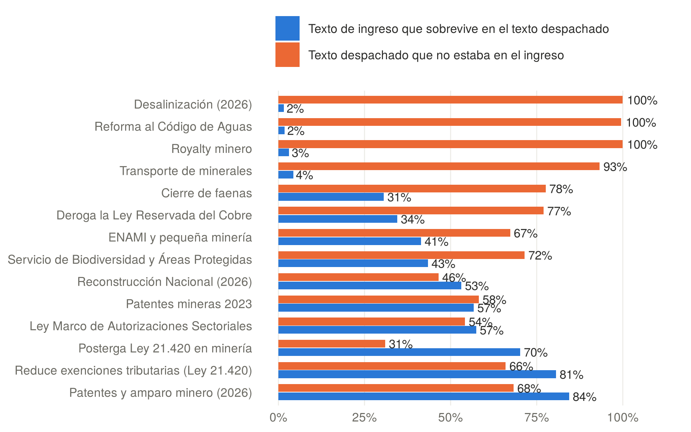
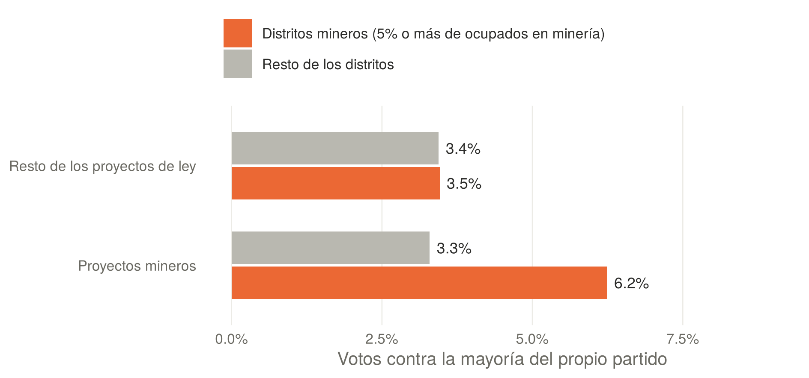
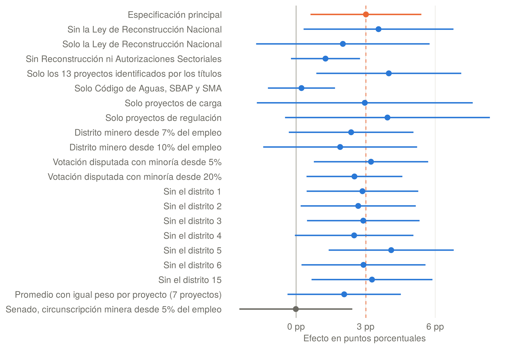

La agenda minera en el Congreso chileno: votos, partidos, territorio y cambios en el texto, 2018–2026
Entre 2019 y 2026 el Congreso aprobó el royalty minero, dos reformas al régimen de patentes, la reforma al Código de Aguas, el Servicio de Biodiversidad y Áreas Protegidas, una ley marco de permisos sectoriales, una ley de desalinización y una reforma tributaria con invariabilidad del royalty para grandes proyectos. Pocos sectores han sido tan legislados en tan poco tiempo.
Este documento de trabajo pregunta cuánto cambia el texto de esos proyectos durante su tramitación, de qué depende su ritmo y qué explica el voto de los parlamentarios. Contrasta tres explicaciones, el bloque, la posición ideológica y el peso de la minería en el empleo del distrito. Esta entrada resume los hallazgos; el documento completo desarrolla el marco teórico, el método y las limitaciones.
Datos y métodos
El universo incluye 21 proyectos seleccionados con un criterio explícito, que abarca las leyes propiamente mineras, las reformas a los regímenes de agua, permisos, evaluación ambiental y áreas protegidas, y las reformas tributarias con normas para la minería. El análisis usa 427 documentos de tramitación del Senado, una medida de reutilización de texto que compara secuencias de palabras entre trámites y más de un millón de votos nominales, cruzados con el empleo minero de cada distrito según el Censo 2024. El voto se analiza con modelos que comparan a cada diputado consigo mismo en votaciones mineras y no mineras, con pruebas de robustez, una prueba de permutación y una réplica en el Senado. Todo el procesamiento es reproducible en R.
Cinco hallazgos
1. El texto que entra no es el que sale
De las cuatro mociones convertidas en ley, entre ellas el royalty y la desalinización, sobrevive entre el 2% y el 4% del texto de ingreso. Los mensajes del Ejecutivo conservan entre el 31% y el 84%, pero incluso en ellos entre el 31% y el 78% del texto final se escribió en el Congreso.

2. La prioridad del Ejecutivo marca el ritmo
Los mensajes aprobados dentro del gobierno que los presentó se publicaron en una mediana de 195 días. Los que cruzaron cambios de gobierno tardaron más de ocho años, y las mociones avanzaron solo cuando un gobierno las hizo propias.
3. El territorio pesa en algunos proyectos, no en todos
En los proyectos mineros, los diputados de los siete distritos donde la minería supera el 5% del empleo votan contra su partido en el 6,2% de las votaciones disputadas, frente al 3,3% del resto. El efecto resiste la exclusión de cada distrito y una prueba de permutación, pero se concentra en la Ley Marco de Autorizaciones Sectoriales y en el royalty, no aparece en las reformas al agua, a las áreas protegidas ni a la fiscalización ambiental, y no se observa en el Senado.


4. El territorio modera a cada bloque desde su lado
La izquierda y la centroizquierda de los distritos mineros apoyaron menos la simplificación de permisos, y la derecha de esos distritos se apartó más de su partido en el royalty, un tributo que destina parte de la recaudación a las regiones mineras. El efecto no favorece siempre a la industria ni siempre al Estado.
5. La política del litio se hizo sin ley
La Estrategia Nacional del Litio se aplicó por vía administrativa, y el proyecto para crear una empresa nacional del litio no se presentó al Congreso. Una parte de las decisiones relevantes para el sector no deja rastro en las votaciones ni en el texto de las leyes.
Alcance
El efecto territorial descansa en dos proyectos, y el promedio con igual peso por proyecto no es significativo. La medida de texto no distingue cambios de fondo de cambios de redacción, por lo que se complementa con una codificación manual de los parámetros de las leyes principales. El análisis no observa las votaciones en comisión, y la agenda de 2026 sigue en desarrollo. Los datos y el código son públicos, de modo que el análisis puede actualizarse a medida que avancen las reformas al SEIA y a la SMA.
Cómo citar
Bottinelli Baltra, L. (2026). La agenda minera en el Congreso chileno: votos, partidos, territorio y cambios en el texto, 2018–2026 (Documento de trabajo N.° 6). https://doi.org/10.5281/zenodo.24124288
El código en R y los datos procesados de esta versión están archivados en Zenodo: https://doi.org/10.5281/zenodo.24124549.
← Volver al blog